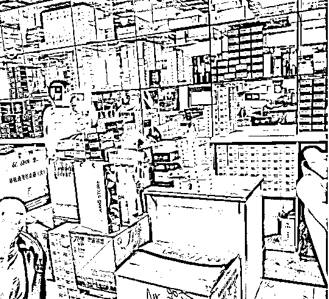
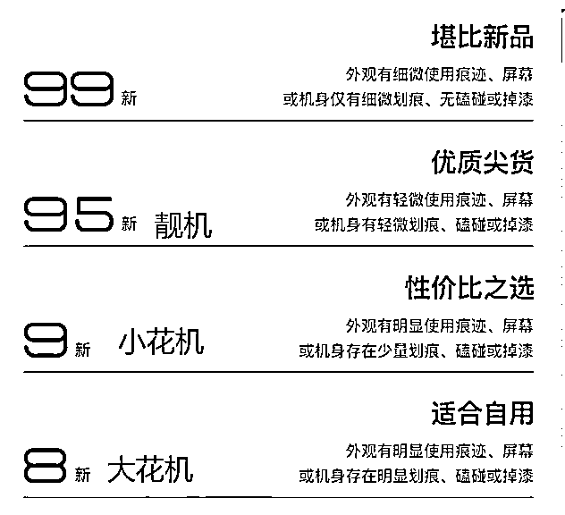

来源：https://dakhb269es.feishu.cn/docx/HGuNdOIhJotWBtx82dTc6jfOnuf
我是罗卜，今年4月加入的生财萌新，还是一个小透明，最近和12个小伙伴做了一个【生财研习社】共读《亦仁益语》。是一个在深圳的湖南人，一个从不阅读到现在每年至少阅读24本书；一个从不跑步，到现在累积8800+公里，跑过4个马拉松，1个50公里越野赛；独自骑行5天4夜从深圳到湖南老家；做过6年公益读书会；我是一个热爱生活，敢于挑战的90后。
之前在生财也写过一篇文章：【做私域营销，不得不掌握的100个技巧】https://t.zsxq.com/10g7BXVq6
来深圳10年，前5年以为找个稳定的工作，就可以安稳的在深圳发展，殊不知我遇到了很多人这辈子可能都遇不到的事情，被好友骗去CX，又经历2家公司破产，1家被裁员，5年就换了3份工作，遇到这么多事，不过我依然觉得生活还是有希望，还得向前走。
后5年先转行，去了京东到家实战区域做了销售，期间拿过销冠，就是那种地推，排名按数量；再跨行，因为兴趣，遇见有书，做了三年同城志愿者，每年带同城志愿者被有书评为十佳优秀同城团队；后入职有书做深圳同城负责人，入职一个月遇到疫情，很多工作无法在线下开展，线上办公三年，最后也离开有书。
因各种原因，不过都是过去的事情，但我在这段时间，通过与好友做手机/二手机也赚了一点小钱。回归正题，说说我在这段时间，我与手机的那点事。
偶然的一天，在朋友圈看到好友在分享手机，那会的印象，买手机都是去线下门店，也可以去网购，但从好友这里买手机，开始我也有些好奇，也咨询过几次，没有下单。
也不是不信任好友，是自己心里那关总觉得有点什么，后面与好友相聚，就好奇问了他，这个手机不会是骗人或者是那种高仿啥的吧。
相信很多人开始也听过华强北各种新闻，我就不赘述，不过这都是老黄历，现在这类也不能说没有，至少少了很多，被查可是要重罚的。
我找好友拿的第一台手机是努比亚z17，当时的官方价和拿货价差400多，手机也是全国联保，也不担心售后无门。后面拿出200多一起吃个饭，也让好友教我怎么做，对方也一一告知我，也跟他去了几次，去混脸熟，加渠道的微信，方便后续对接。
就这样我后来也帮我家人拿了好几台，这里算起来也省了1000多块吧。
也在朋友圈分享手机日常，陆续也有一些好友找我购买，陆陆续续每个月有个4-5台的样子，算是挣点零花钱，毕竟那会还在上班。
这个渠道一直用到现在，每个月依然有几台，现在量比之前少了很多。
咸鱼的交易流水
出货记录
出货记录
华强北商业区位于深圳市福田区，其前身是生产电子、通讯、电器产品为主的工业区域。
随着经济发展，华强北区域功能发生变化，华强北逐渐成为了中国最大的电子市场。变成深圳最传统、最具人气的商业旺地之一。
“北中关村，南华强北”之称的两大电子批发市场，华强北有“中国电子第一街”的美誉。
就不多介绍了，很多朋友也多多少少也听到很多关于华强北的新闻。
那会我在京东到家深圳区域做BD，正好也是负责福田区域的运营和开拓，与我而言，很便利，几乎每天都可以路过。
我先说下我主要去的几个地方：
远望数码商城
部分手机报价表
部分手表报价
部分电脑报价表
这个位置就是整个华强北全新机的批发市场，可以看到两个很大的字“远望”，手机市场不是在一楼，而是三楼,去就能看到各个档口，各种新机都摆在货架上。
一楼临街铺面都是做零售的，店面租金贵，做批发的不可能在路边，也有很多做维修，手机周边产品的，壳、数据线、钢化膜等。
这里卖的都是正品，也有港版、美版等，官网可查询序列号，各类手机品牌都能找到。
新机拿货就比较简单，先对比几家的价格，找低价，只有拿到低价，利润才能最大化。
通天地通讯城/飞扬时代大厦
每天会更新二手机报价，部分机型报价
主要是苹果二手机、平板、电脑的市场，隔壁的统建楼长城市场就是安卓二手机市场（华为、小米、vivo、三星等）。
一楼：卖手表、壳膜配件、蓝牙耳机的柜台。
二楼：苹果手机电池、屏幕、零部件等。
三楼：官换机、资源机、iPad和笔记本二手的档口。
四楼：苹果二手机。每层楼的周围都是搞维修的门面。
很多档口上午就不用去，都没有开门。大部分都是下午1点后陆续开门营业，不要问为什么，这边都是这样，提前去好处就是人少，但手机品类也少；稍微晚点去人多，和菜市场一样，都是“背包客”。
我的日常是帮客户找拿货，确认好价格，再去市场拿货，先在微信上咨询关系不错的档口老板，确认价格和是否有货，然后直接去拿，若是对方没有，或者客户有特别的需求，就得每个档口去询问，有点费事，但为了拿到一台或多台还是愿意花时间去磨。
一台手机从寻找，到拿到手，得花半小时，主要要去测试，检验二手机是否有坑（暗病），如果发现有质量问题直接找老板先换，继续测，有时要测好几台才能找到合适的。

全新机档口
二手机档口，正在交易的背包客们
没有拿过炸弹机就别说自己是背包客，这句话也在背包客里经常流传，那个谁今天又拿到一台炸弹机亏了大几千，这是常有的事。
正常验机流程
案例1：一个很好的朋友，找我拿了一台红色美版的iPhone8 plus ，在检查的时候，一个步骤都没有落下，当时都是正常的。一个月后，朋友说手机出现问题了，二手机按正常来说，买去使用一个月，我完全可以不理会，谁知道在使用过程中是不是有操作不当，摔了，掉地上，磕碰啥的，后来朋友主动减了1000元，我把这手机就砸手里了，去维修还得掏一笔费用，然而这款手机又不好出手。
案例2：另外一个也是类似，当时都是正常的，这个是杭州的一个客户，之前有过工作对接，未见面，拿了一台iPhone6，很老款，用了一段时间说手机出现问题，我就让他寄过来，我这边先看看，发现要屏出现问题，要换。和客户说了事情，也报了维修价，客户也很实诚说是自己小孩给摔了，也帮其维修，虽然这个费用都是客户自己出，但我花了不少时间帮客户去处理这个问题，最后我还给包邮寄过去。
好几次都是通过微信让店家直接发货，但店家有些货可能也是回收的，那么有些可能再次塑封，也可能存在手机已使用货激活，但时间不是很长，也就几天，因为塑封不够严谨，有些客户拍照过来说手机上还有指纹，包装盒还有黑点啥的。
找我拿手机大部分都是熟人，但即使这样内心还是有些不安，也期望给朋友拿到的都是全新原封未激活的。
经过和朋友沟通，说明情况，大部分还是能理解，实在不能理解就说送点周边，或发个红包，下回请吃个饭啥的。
因为都是通过微信联系，所以没有办法规避，要是自己去拿又费时间，但量大的情况还是要亲自去现场拿货自己亲自发货。
一台手机、尤其二手的。他不单单只是一个型号、他分很多、版本、成色、带保修、不带保修、高保、低保、有锁、无锁、修过、没有修过，有功能问题，没问题。价格都不一样，一味对比价格只会上了骗子的当！所以一定要了解清楚。
各种二手机成色对比

各种二手机的叫法
大花机
小花机
序列码查询方式
全新机主要看是否激活，默认是未激活状态。
二手机主要看下你所拿的手机信息与查询的是否一致，主要看颜色、内存、型号等。
以上只是给大家讲述，我在这个日常，都做了哪些，想必大家更关心的是如何去做？做的过程中都有哪些方法？虽然懂得了这么多，没有流量，没有用户，那也是百搭。
开始的我，手里也积累了1000多好友，大部分都是同学、好友、同事，然而做这个副业的时候，又不能让同事知道，所以就把期望寄托在同学和好友。
先编辑了一条短信，给这些好友都一对一发了过去，结果比预期的差很多，只有少数几个回复我，说有需要就找我，也有几个说可以试试。
就把这些意向的拉到一个群里，每天在群里给大家发报价，开始每天都有讨论，咨询，也有邀请好友进群咨询，陆续也成交了几单。
开始在咸鱼手机相关分享引流，有咨询，也有下单购买。咸鱼日常发布闲置手机，多个账号分发，以个人卖家发出。
已购朋友的推荐，他们在这里购买手机，推荐的好友也有一定的信任，来咨询基本上就比较轻松。同时也会定期招募代理，让代理们去发展新用户，教他们如何发圈，也会在社群分享手机相关知识及报价等。
另外也会加入一些优质的社群，在社群自我介绍的时候，重点介绍自己是做手机的，同时也在介绍完发个红包，让更多人知道。
总的用户路径：先通过介绍及广子吸引，在咨询的时候帮助客户选择合适的机型及建议，下单购买后告知注意事项及后续的跟进回访等。
目前主要还是以朋友圈，咸鱼，自建社群为主，后期会考虑以培训、招募代理为突破口，帮助更多想加入的人来学习，就像分销一样“自购省钱，推广挣点零花钱”。
另外需打造有温度的朋友圈，做好私域运营，社群运营，同时需要多渠道去拓新客。
华为 P60 & vivo X90s
某东：4388
官网：4388
拿货价：4110
某东：4299
官网4299
拿货价3530(限深圳地区）外地加200-500
新机售后，与官方购买一样享受全国联保。
主要以苹果机为主
转转报价6398

零售价 6000 二手机每天都会浮动具体以当天报价为准
每一台二手机，都是反复测试，确认无误才出货。
1.普通群
以了解，咨询为主，邀请加入，每天在群里分享最新报价。
2.会员群
主要以购买过手机的用户为主，这类用户会以发展代理、分销去建设，除了日常的报价，还会分享朋友圈、社群运营、销售技巧等分享，帮助跑通闭环。
3.代理群（合伙人）
销售3台以上或参加线上培训人员为主，包含上述所有权益，在销售端会增加利润比例，让利给代理（合伙人）。
4.一对一线下指导学习
半天理论，半天实操，对接线下稳定资源。
百亿补贴
某东百亿补贴：7199
某多百亿补贴：7199
零售价7430 回收价在 7300-7400
寻找价格差异较大的机型，卖给批发商，赚取最大的利润，最好当天拿到手机当天出手。
因为每人限购1台，需要确保不同地址不同人员，目前是统一寄到我这，再去与批发商交易。
手机回收
无论是新机还是二手机，参考“爱回收"报价，具体得看手机状态，一般会比”爱回收“报价高，不然直接让客户去”爱回收“好了。
目前做的规模不算很大，陆陆续续的坚持，也不想把这个资源浪费，同时也期望私域运营把量放大，现在的手机价格越来越透明，甚至做活动期间都没有啥优势，尤其是百亿补贴一直在的情况下，很大机型是没有价格优势。
很多时候，我们所知道的信息，以为很多人也知道，殊不知其实还是有很大一部分不知道，正因为不知道，我们才有机会去做。
手机虽然到处可以购买，但对于二手机，我发现很多人也会在个平台去选购，但更多的基于信任，对于手机的性价比，还是会选择信任及靠谱的人去购买。
这里只是给大家分享了我个人卖手机或者做过的副业的一点点经验，也把我在这条路上的一些坑，虽然这个项目没有给我带来很多收益，也让我收获一群稳定的客户，同时也让我学会了如何通过卖手机赚取第1块钱。
想到就要去做到，本觉得写这篇文章只是取记录自己的故事或经历，但我花了几个小时写的时候，也把自己的过往副业经验重新梳理了一遍，其实我也算是实战过，只是实战的成功不是很明显，或者说执行力还不够吧。
有了这些经验，分享给需要的人，也算一种善意，帮助他人就是帮助自己。
写出来可能有些人觉得这些满大街都能找到资料，不写出来又怕很多人去踩坑，不论如何先完成，再完美。发现好的项目，去实战吧，哪怕是失败的经验，也比不做的要强。
以上仅个人的一些项目经验，若有不妥，欢迎指正，也欢迎大家多多交流。